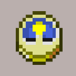
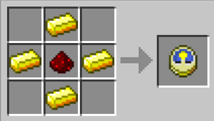

clock

Description
Clocks (sometimes called watches), are items that display the current in-game time by displaying the sun and the moon's position relative to the horizon. The clock consists of two halves, a day side and a night side. These spin slowly to indicate the time of day, corresponding to the sun or moon's actual position in the sky. The player is able to sleep a few seconds after the clock shows exactly dusk. Clocks will still show the proper time when viewed in any way, including as a dropped item, in a player's hand, in any inventory or the crafting table, or in an item frame.
